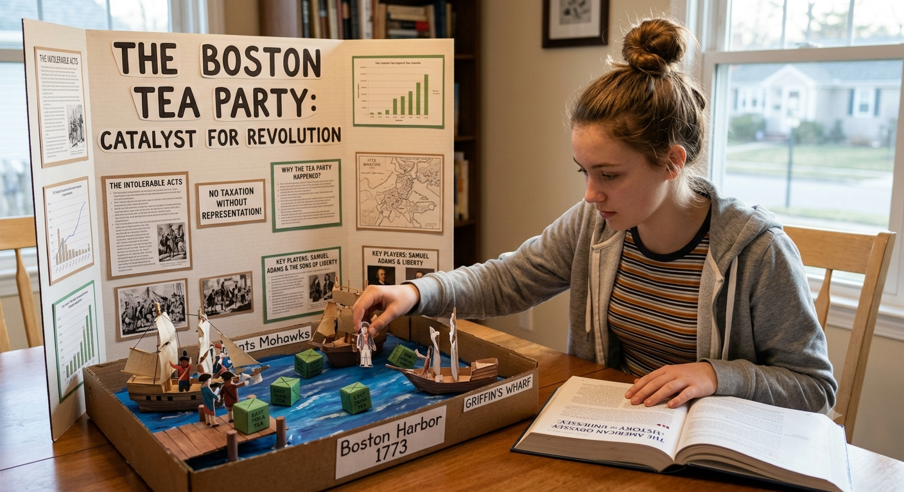
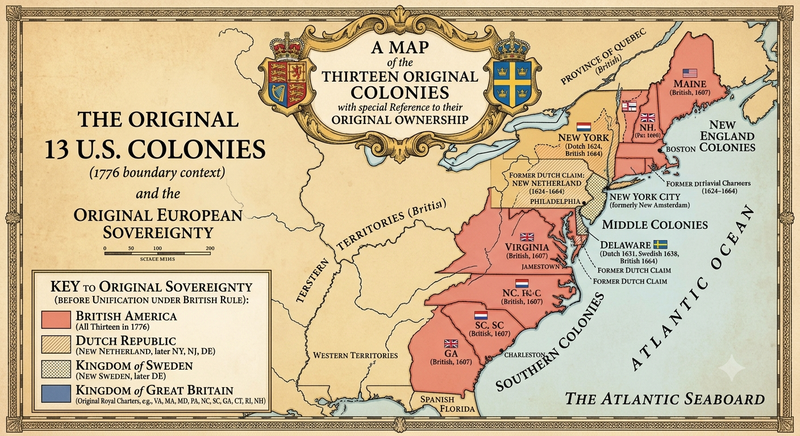
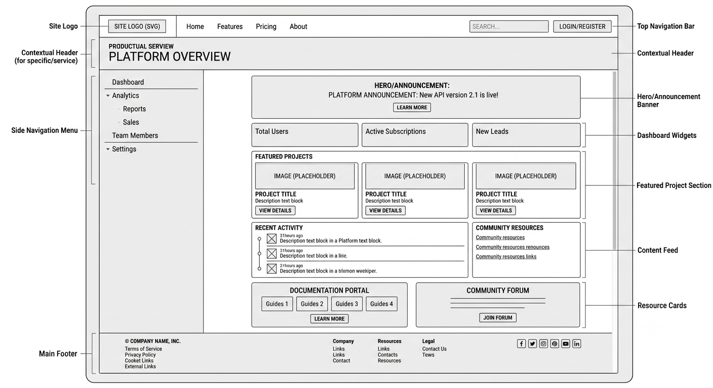
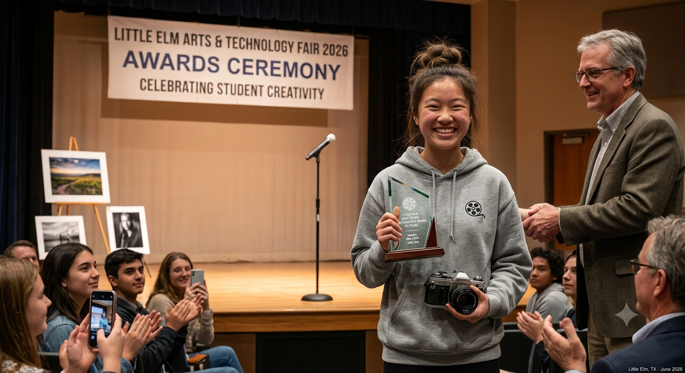
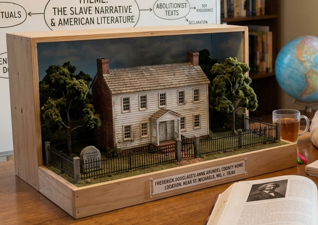

Portfolio of the Year

I've been spending time at the skate park, working on my skills.
I've been working on the composition of my photographs. This one won in a recent contest!

This year I'm studying US History. I created a diorama of the Boston Tea Party, which really brought it to life and helped me see what was happening.

With studying the US History, I also was able to create a map of the original colonies and which countries controlled/owned them.

I've been working on my web design skills. This is a wireframe I created for a site I'm working on.

My photography has been getting better and better! Here is a picture of the award I won.

I've also been studying American Literature this year. We recently read Frederick Douglass, and I made a diorama of where he lived.